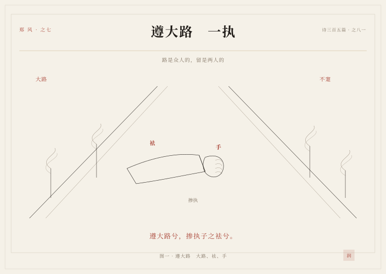
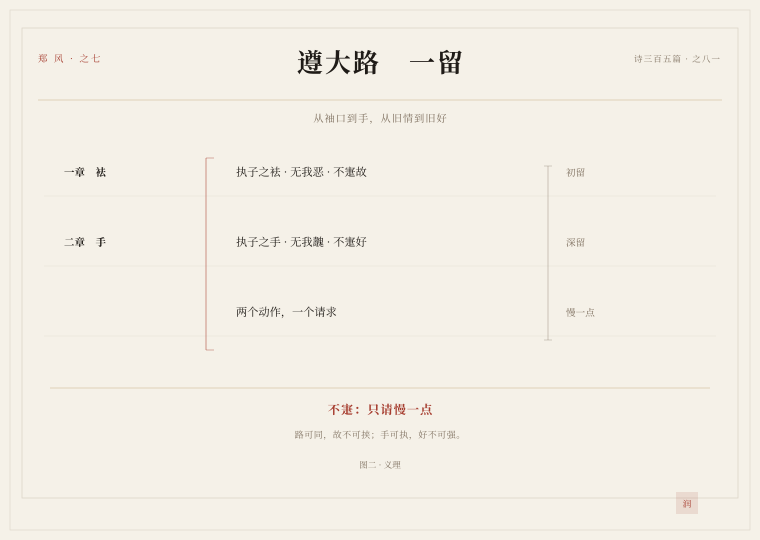

第八十一篇 遵大路
郑风 · 之七 SJ081
朗读 · 普通话
依经文原文朗读，章次不读出；配古琴底乐，不改速、不加拖腔。全库同一音色（豆包 TTS），非播音员录制。
一 解题
诗三判：
- 谁在说：一个被留在路上的人。她/他沿着大路走，伸手抓住另一个人的袖口，再抓住手，说：不要嫌我，不要这么快忘了旧情。全诗只有这一双手在动。
- 说什么事：两章，只换两个动作、两个理由。动作从“袪”到“手”，越抓越紧；理由从“故”到“好”，越说越软。大路是公共的，挽留是私人的；越在亮处，越见其难。
- 为何编在此：郑风之七。080 写“朝有服而无其人”，081
写“路有人而留不住”。一个朝廷留不住君子，一条大路留不住旧人；都是“去”字。
《毛序》：“《遵大路》，思君子也。庄公失道，君子去之，国人思望焉。”
朱子《诗集传》：“赋也。遵，循。掺，揽。袪，袂。寁，速。故，旧也。魗，与丑同。好，旧好也。”朱子以此诗为“淫妇为人所弃而挽留”之词，与毛序“思君子”异。
本库的看法：《遵大路》是一首把“留”写成“抓”的诗。
诗不写“你为什么要走”，只写“你不要这么快的走”。“不寁”两个字是全诗的骨：不是不许走，是不许“这么快”。挽留的分寸，就在“快”与“不快”之间。两章从袖口到手，从旧情到旧好；手越抓越下，话越说越轻。
先辨四事：“遵”是沿、循，不是“遵守”；“掺”是揽、执，不是“掺和”；“袪”是袖口，不是“去”；“寁”是速，不是“暂”。
二 经文
第一章
遵大路兮，掺执子之袪兮。
无我恶兮，不寁故也。
第二章
遵大路兮，掺执子之手兮。
无我魗兮，不寁好也。
分章：二章，章四句。
三 韵读
- 一章：路、袪、恶、故，鱼铎通押；路、恶入声，袪、故平声。
- 二章：手、魗、好，幽部；三字相押。
读法：一章四个韵脚，鱼铎一收一放；二章三个韵脚，幽部一沉一留。韵越收越窄，手越抓越紧。
四 字义与名物
- 遵：循、沿。大路：大路、正道；公共空间。
- 掺：揽、执；一作“攕”，以手执之。
- 袪：袖口。手：手掌。由袖口到手，是挽留的加深。
- 无我恶：不要厌恶我。无我魗：不要以我为丑；魗，丑。
- 寁：速、疾。不寁：不要这么快。
- 故：旧、旧情。好：旧好、情好。
- 大路：一说“大路”为“大道”，与“遵”相应；不是专名。
五 今译
沿着大路走啊，我拉住你的袖口。不要厌恶我啊，不要这么快就忘了旧情。
沿着大路走啊，我拉住你的手。不要嫌我丑啊，不要这么快就丢了旧好。
六 章旨
- 一章：写“袪”。抓袖口，是初留；说“故”，是旧情。还留着一层布的距离。
- 二章：写“手”。抓手掌，是深留；说“好”，是旧好。布的距离没有了，人的距离还在。
- 总收：路可同，故不可挟；手可执，好不可强。
挽留不是抓住，是请对方“慢一点走”。
七 诗教
- 兴：以大路起兴。路是众人走的，留是两个人的人事；公共的路，衬私人的留。
- 观：观“去留”的分寸。想留的人，不问你为什么走，只请你慢一点；这是留，不是拦。
- 群：大路上人来人往，一双手抓住另一双手；众目之下，私情最难。
- 怨：诗里没有怨，只有请。怨在“不寁”里：你走得这么快，就是不怕我难过。
八 分寸与边界
- 不可把“遵”当“遵守”。它是沿路走；一读成守则，诗就成格言。
- 不可把“袪”当“去”。它是袖口；一读成离开，下一句“执”就没有着落。
- 不可把“寁”当“暂”。它是速；“不暂”是“不短暂”，
“不寁”是“不要这么快”。
- 不可把“无我恶”当“我厌恶你”。它是“不要厌恶我”；主客一倒，诗就反了。
- 不可把两章当两个人。两章是同一场挽留的两个动作；一分为二，手就断了。
九 存疑
- 诗旨：毛序“思君子，庄公失道，君子去之”；朱子“淫妇见弃而挽留”。一政治，一私情；本库两存，以“留”读。
- “魗”：毛传“魗，丑也”；一说“魗”借为“詈”，骂。从“丑”读，才与“恶”对。
- “寁”：毛传“速也”；一说“暂”。从“速”，才见“这么快”。
- “故/好”：故是旧情，好是旧好；一说“故”为“故人”，“好”为“相好”。两读可通。
- 作者与年代：毛序不言作者；朱子以为“淫妇”之词。是否庄公时人，无确证。
十 跨典
- 《论语·里仁》：“君子去仁，恶乎成名？”——君子之去，不是去一处，是去“仁”；可与“君子去之”对读。
- 《孟子·公孙丑下》：“不得已而去，于斯三者何先？”——去有先后，留也有分寸。
- 《礼记·曲礼上》：“行不中道，立不中门。”——大路是公共之度；挽留也在度内。
- 《诗本音》：二章韵读，路、袪、恶、故鱼铎通押，手、魗、好幽部，见卷三。
十一 双卡与图
双卡六对：
| 遵（循、沿） |
遵（遵守） |
| 掺（揽、执） |
掺（掺和） |
| 袪（袖口） |
袪（离去） |
| 寁（速） |
寁（暂） |
| 无我恶（不要厌恶我） |
无我恶（我不厌恶你） |
| 故／好（旧情／旧好） |
故／好（缘故／好人） |

图一 · 遵大路 大路、袪、手

图二 · 遵大路 袪→手，故→好
读图三处：
- 路在中间：图一一条大路从脚下伸到天边，两边是树，不是房。路越空，挽留越显。
- 只画两袖：图一不画脸，只画一只袖口、一只手；袖口被抓住，手在袖外。“袪”到“手”，是两章的距离。
- “不寁”压底：图二两章并排，左“袪→手”，右“故→好”，底下一行“不寁”。全诗只有这一个请求：慢一点。